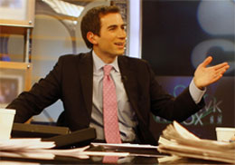

Andrew Ross Sorkin, author of Too Big to Fail
November 2015

New York Times columnist and author, Andrew Ross Sorkin, has been described as the most famous financial journalist of his
generation.
His book, Too Big to Fail, was the first behind-the-scenes account of the financial crisis that led to our current recession.
The Economist, The Financial Times, and Business Week all named Too Big To Fail one of the best books of the year. The book was
published by Viking October 20, 2009. The book was adapted as a movie by HBO Films and premiered on HBO on May 23, 2011.
The cast of the movie: Too Big to Fail
- William Hurt as Hank Paulson
- Paul Giamatti as Ben Bernanke
- Billy Crudup as Timothy Geithner
Movie reviews
Lots of heat but not very much light. It came across as a kind of daytime soap opera version showing the personalities of
the players rather than dealing with the nuts and bolts of what really happened. Even that would not have been so bad but
the movie tries to portray lots of these folks as sympathetic figures just trying to do the right thing.
I am watching this for the 3rd time, trying to understand how this large group of capitalist pigs could royally screw their
families, descendants, neighbors, countrymen and the rest of the whole world with absolutely no compassion.
Prepared by: Ziad Abou-Ghali
Date: October 19, 2021